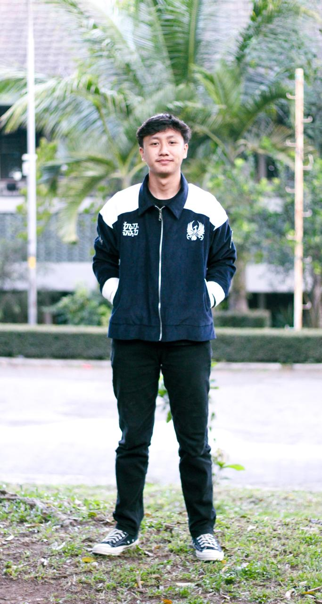
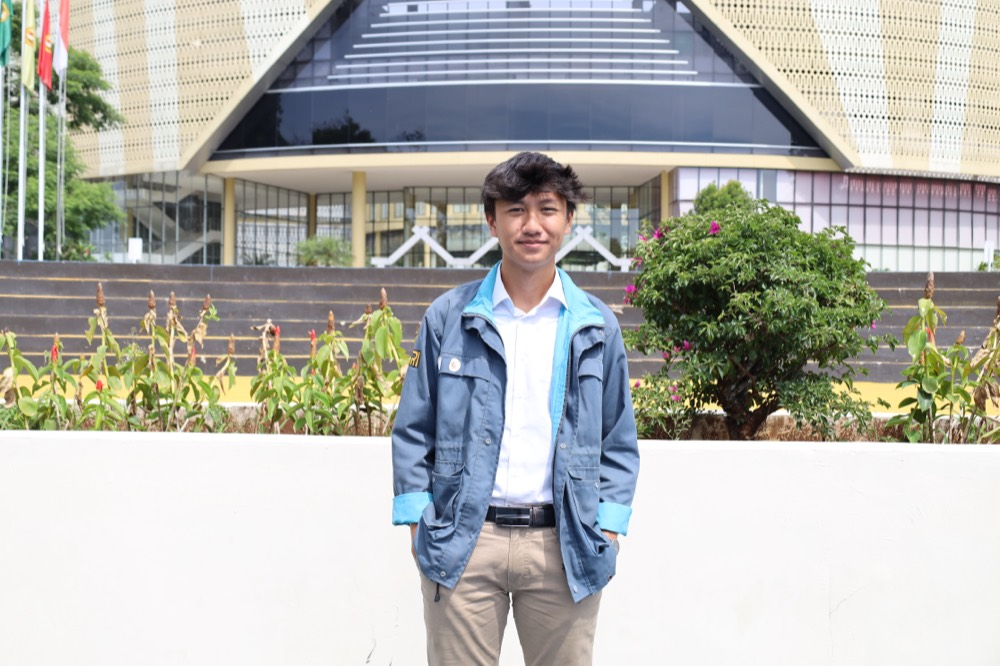
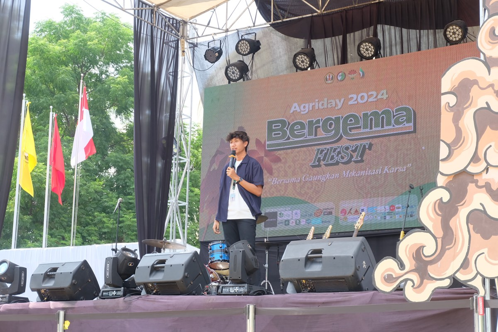
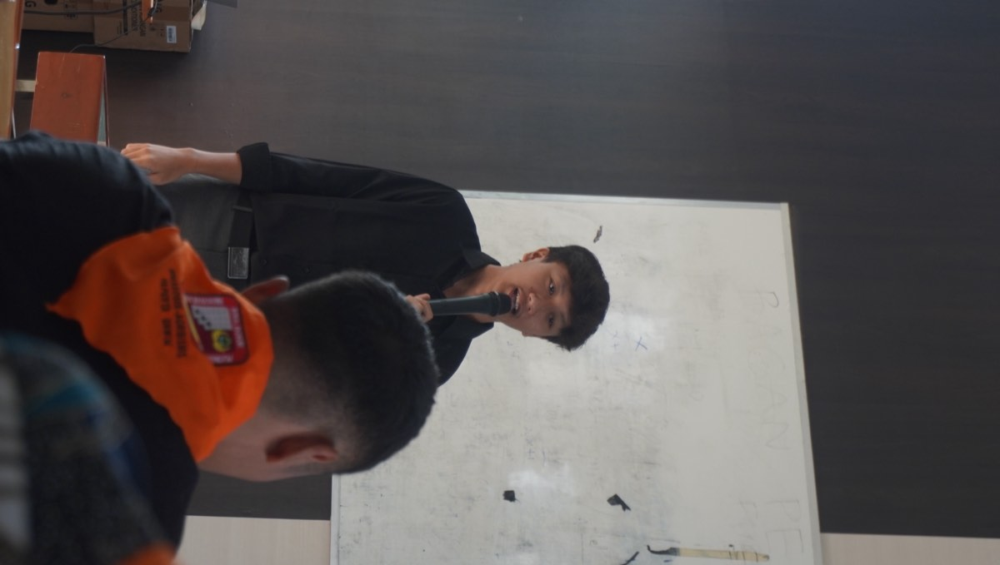
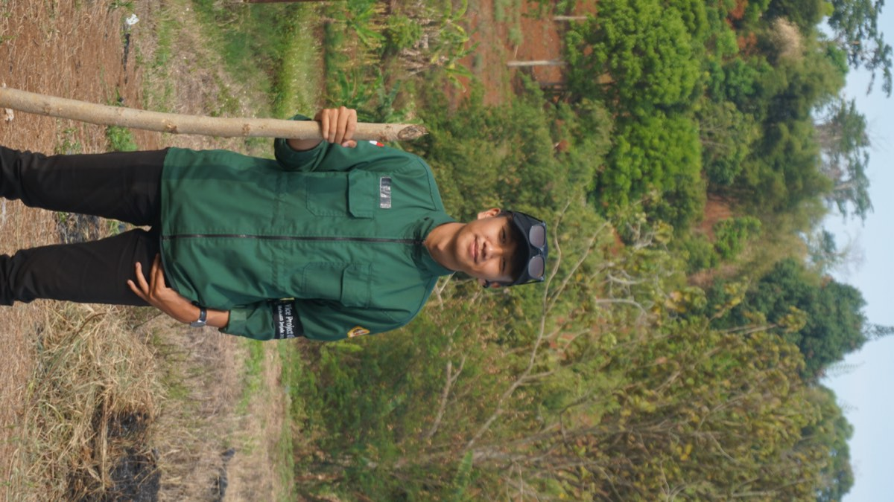
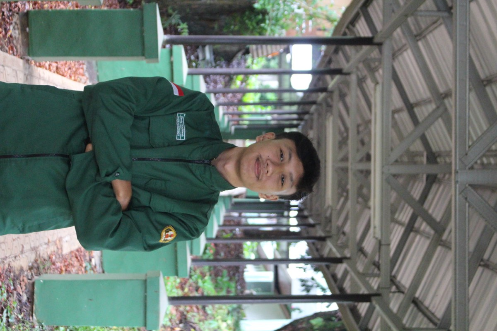

Agribusiness · Business Development · Marketing
Business Development & Project Design

Business development and marketing enthusiast with hands-on experience in agribusiness, partnership outreach, and project management through internships and organisational leadership.
Proven ability to lead cross-functional teams, coordinate strategic projects, and build collaborative partnerships while maintaining strong communication and problem-solving skills.
Bachelor of Agribusiness
Natural Sciences & Technology
Bogor, Indonesia

BEM KMFP Unpad
Himpro Agri Unpad
BEM KMFP Unpad
Himpro Agri Unpad
Supervised technical operations across 50+ committee members. Delivered 10 cadre development series for 500+ new students of the Faculty of Agriculture.
Managed 50+ committee members. Led National Seminar, Business Competition, and Exhibition with 500+ participants. Secured 10+ sponsorships and media partners.
Led planning and execution of 5 student development programs involving 100+ participants. Built team systems to ensure equal growth opportunities.
Facilitated event logistics end-to-end, managed 100+ committee members as primary liaison. Processed nominee data for 10+ award categories.



Whether it's a project, a collaboration, or a conversation about growth — I'm always open to planting new seeds.
Bahasa Indonesia — Native · English — Professional Working Proficiency